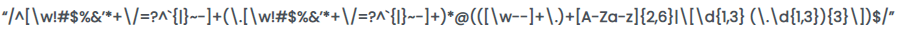

Disciplinas
-
FUNDAMENTOS DE WEB. Concluído
Materiais
- Prof. Especialista: Luciano Édipo Pereira da Silva.
- Iniciado em quarta, 18 set 2024, 19:30
- Estado Finalizada
- Concluída em quarta, 18 set 2024, 20:09
- Tempo empregado 38 minutos 53 segundos
- Avaliar 10,00 de um máximo de 10,00(100%)
Questionário ✅ ❌
Pergunta 1
De acordo com Marinho (2019), o jQuery é baseado em qual linguagem?
- a. Java
- b. HTML
- c. JavaScript
- d. TypeScript
- e. PHP
Resolução:
- JavaScript é a linguagem de programação na qual jQuery é baseado. jQuery é uma biblioteca JavaScript que simplifica a manipulação do DOM, eventos, animações e interações AJAX.
Pergunta 2
De acordo com Miletto (2014), qual tipo de janela de diálogo do JavaScript apresenta a janela mostrada na imagem abaixo?
.PNG)
- a. prompt
- b. imagem.src
- c. document.write
- d. confirm
- e. alert
Resolução:
- O prompt é um tipo de janela de diálogo que exibe uma mensagem ao usuário e fornece um campo de entrada para que o usuário insira algum dado. Neste caso, o campo está pedindo para que o usuário insira o "Nome".
Pergunta 3
De acordo com Miletto (2014), qual tipo de janela de diálogo do JavaScript apresenta a janela mostrada na imagem abaixo?
- a. alert
- b. prompt
- c. document.write
- d. imagem.src
- e. confirm
Resolução:
- O alert é uma janela de diálogo que exibe uma mensagem simples ao usuário e apenas uma opção de botão "OK". O objetivo principal dessa janela é informar algo ao usuário sem a necessidade de uma resposta direta ou ação além de fechar a janela.
Pergunta 4
De acordo com Miletto (2014), a seguinte expressão regular é usada para mascarar qual informação?
- a. CNPJ
- b. CEP
- c. CPF
- d. E-mail
- e. Telefone
Resolução:
- A expressão regular exibida na imagem parece ser usada para validar ou mascarar endereços de e-mail. Isso é indicado pelo padrão que verifica a presença de um símbolo @, seguido por um domínio (letras e pontos), e depois uma extensão, como ".com" ou ".br"
Pergunta 5
De acordo com Marinho (2019), é correto afirmar que o Node.js é mono protocolo?
Escolha uma opção: Verdadeiro ou Falso.
Resposta: Falso. ✅Resolução:
- O Node.js não é restrito a um único protocolo. Ele suporta múltiplos protocolos, como HTTP, HTTPS, TCP, UDP, entre outros. Isso significa que o Node.js pode ser utilizado para construir aplicações que operam com diferentes tipos de protocolos de rede, tornando-o bastante versátil para diversas aplicações de servidor..
Pergunta 6
De acordo com Miletto (2014), o JavaScript tem a função de controlar o comportamento da página, permitindo, por exemplo:
Escolha uma ou mais:
- a. Validar formulários.
- b. Executar pequenas operações e manipulações junto ao navegador.
- c. Definir padrão de marcação de elementos.
- d. Ocultar e mostrar objetos.
- e. Alterar estilos.
Resolução:
- a. Validar formulários:
- JavaScript pode validar formulários, verificando se os campos foram preenchidos corretamente antes de enviar as informações para o servidor.
- b. Executar pequenas operações e manipulações junto ao navegador:
- JavaScript é usado para realizar manipulações no navegador, como exibir alertas, manipular cookies, ou interagir com o DOM (Document Object Model).
- d. Ocultar e mostrar objetos:
- JavaScript permite alterar a visibilidade de elementos da página, ocultando ou exibindo objetos dinamicamente, sem precisar recarregar a página.
- e. Alterar estilos:
- JavaScript pode manipular os estilos CSS de uma página, alterando cores, tamanhos e outras propriedades de estilo de elementos HTML.
Pergunta 7
De acordo com Marinho (2019, p. 68), com o jQuery:
“As (.....)
web ganham (.....)
e dinamismo. Dessa forma, o (.....)
tem acesso a (.....)
úteis para a criação de (.....)
[...]”
Opções: páginas, interatividade, desenvolvedor, funcionalidades, scripts.
Resposta: Falso. ✅Resolução:
“As páginas
web ganham interatividade
e dinamismo. Dessa forma, o desenvolvedor
tem acesso a funcionalidades
úteis para a criação de scripts
[...]”
Pergunta 8
De acordo com Miletto (2014), qual propriedade representa quando um campo de um formulário perde o foco?
- a. onFocus
- b. onBlur
- c. onChange
- d. onLoad
- e. onError
Resolução:
- A propriedade onBlur é um evento em JavaScript que é acionado quando um elemento perde o foco. Quando se sai de um campo de formulário, como um campo de texto ou uma caixa de seleção, o evento onBlur é disparado. Isso é útil para realizar validações ou executar outras ações quando o usuário termina a interação com o campo.
Pergunta 9
De acordo com Miletto (2014), qual propriedade representa o evento de carregamento de um elemento?
- a. onError
- b. onFocus
- c. onLoad
- d. onAbort
- e. onChange
Resolução:
- O evento onLoad é acionado quando um recurso, como uma imagem ou uma página, é carregado completamente. Isso pode ser útil para executar funções ou scripts quando o carregamento de um elemento é concluído.
Pergunta 10
De acordo com Miletto (2014), qual tag HTML é comumente usada para integrar um código JavaScript no HTML?
- a. <script>
- b. <head>
- c. <link>
- d. <src>
- e. <meta>
Resolução:
- A tag <script> é utilizada para incluir e executar código JavaScript dentro de uma página HTML. Pode colocar o código JavaScript diretamente dentro da tag <script> ou referenciar um arquivo JavaScript externo usando o atributo src.